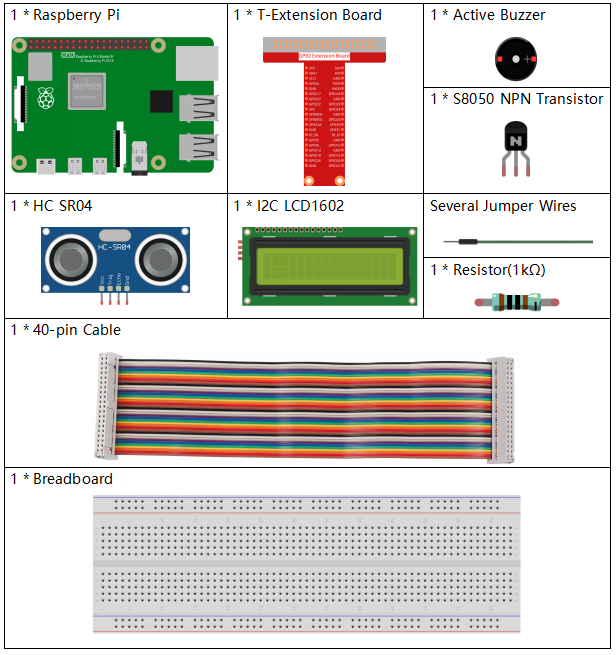

Bemerkung
Hallo und willkommen in der SunFounder Raspberry Pi & Arduino & ESP32 Enthusiasten-Gemeinschaft auf Facebook! Tauchen Sie tiefer ein in die Welt von Raspberry Pi, Arduino und ESP32 mit anderen Enthusiasten.
Warum beitreten?
Expertenunterstützung: Lösen Sie Nachverkaufsprobleme und technische Herausforderungen mit Hilfe unserer Gemeinschaft und unseres Teams.
Lernen & Teilen: Tauschen Sie Tipps und Anleitungen aus, um Ihre Fähigkeiten zu verbessern.
Exklusive Vorschauen: Erhalten Sie frühzeitigen Zugang zu neuen Produktankündigungen und exklusiven Einblicken.
Spezialrabatte: Genießen Sie exklusive Rabatte auf unsere neuesten Produkte.
Festliche Aktionen und Gewinnspiele: Nehmen Sie an Gewinnspielen und Feiertagsaktionen teil.
👉 Sind Sie bereit, mit uns zu erkunden und zu erschaffen? Klicken Sie auf [hier] und treten Sie heute bei!
3.1.3 Alarm umkehren
Einführung
In diesem Projekt werden wir LCD-, Summer- und Ultraschallsensoren verwenden, um ein Rückwärtshilfesystem herzustellen. Wir können es auf das ferngesteuerte Fahrzeug setzen, um den tatsächlichen Vorgang des Rückwärtsfahrens des Autos in die Garage zu simulieren.
Komponenten
Schematische Darstellung
Der Ultraschallsensor erkennt den Abstand zwischen sich und dem Hindernis, der in Form einer Kode auf dem LCD angezeigt wird. Gleichzeitig ließ der Ultraschallsensor den Summer einen sofortigen Ton unterschiedlicher Frequenz je nach Entfernungswert ausgeben.
T-Karte Name |
physisch |
wiringPi |
BCM |
GPIO23 |
Pin 16 |
4 |
23 |
GPIO24 |
Pin 18 |
5 |
24 |
GPIO17 |
Pin 11 |
0 |
17 |
SDA1 |
Pin 3 |
||
SCL1 |
Pin 5 |

Experimentelle Verfahren
Schritt 1: Bauen Sie die Schaltung auf.

Für Benutzer in C-Sprache
Schritt 2: Verzeichnis wechseln.
cd ~/davinci-kit-for-raspberry-pi/c/3.1.3/
Schritt 3: Kompilieren.
gcc 3.1.3_ReversingAlarm.c -lwiringPi
Schritt 4: Ausführen.
sudo ./a.out
Während die Kode ausgeführt wird, erkennt das Ultraschallsensormodul die Entfernung zum Hindernis und zeigt dann die Informationen zur Entfernung auf dem LCD1602 an. Außerdem gibt der Summer einen Warnton aus, dessen Frequenz sich mit der Entfernung ändert.
Code
Bemerkung
Die folgenden der Kode sind unvollständig. Wenn Sie die vollständigen Kode überprüfen möchten, wird empfohlen, den Befehl nano 3.1.1_ReversingAlarm.c zu verwenden.
#include <wiringPi.h>
#include <stdio.h>
#include <sys/time.h>
#include <wiringPi.h>
#include <wiringPiI2C.h>
#include <string.h>
#define Trig 4
#define Echo 5
#define Buzzer 0
int LCDAddr = 0x27;
int BLEN = 1;
int fd;
//here is the function of LCD
void write_word(int data){...}
void send_command(int comm){...}
void send_data(int data){...}
void lcdInit(){...}
void clear(){...}
void write(int x, int y, char data[]){...}
//here is the function of Ultrasonic
void ultraInit(void){...}
float disMeasure(void){...}
//here is the main function
int main(void)
{
float dis;
char result[10];
if(wiringPiSetup() == -1){
printf("setup wiringPi failed !");
return 1;
}
pinMode(Buzzer,OUTPUT);
fd = wiringPiI2CSetup(LCDAddr);
lcdInit();
ultraInit();
clear();
write(0, 0, "Ultrasonic Starting");
write(1, 1, "By Sunfounder");
while(1){
dis = disMeasure();
printf("%.2f cm \n",dis);
delay(100);
digitalWrite(Buzzer,LOW);
if (dis > 400){
clear();
write(0, 0, "Error");
write(3, 1, "Out of range");
delay(500);
}
else
{
clear();
write(0, 0, "Distance is");
sprintf(result,"%.2f cm",dis);
write(5, 1, result);
if(dis>=50)
{delay(500);}
else if(dis<50 & dis>20) {
for(int i=0;i<2;i++){
digitalWrite(Buzzer,HIGH);
delay(50);
digitalWrite(Buzzer,LOW);
delay(200);
}
}
else if(dis<=20){
for(int i=0;i<5;i++){
digitalWrite(Buzzer,HIGH);
delay(50);
digitalWrite(Buzzer,LOW);
delay(50);
}
}
}
}
return 0;
}
Code Erklärung
pinMode(Buzzer,OUTPUT);
fd = wiringPiI2CSetup(LCDAddr);
lcdInit();
ultraInit();
In diesem Programm wenden wir frühere Komponenten synthetisch an. Hier verwenden wir Summer, LCD und Ultraschall. Wir können sie auf die gleiche Weise wie zuvor initialisieren.
dis = disMeasure();
printf("%.2f cm \n",dis);
digitalWrite(Buzzer,LOW);
if (dis > 400){
write(0, 0, "Error");
write(3, 1, "Out of range");
}
else
{
write(0, 0, "Distance is");
sprintf(result,"%.2f cm",dis);
write(5, 1, result);
}
Hier erhalten wir den Wert des Ultraschallsensors und die Entfernung durch Berechnung.
Wenn der Entfernungswert größer als der zu erkennende Bereichswert ist, wird eine Fehlermeldung auf dem LCD gedruckt. Wenn der Abstandswert innerhalb des Bereichs liegt, werden die entsprechenden Ergebnisse ausgegeben.
sprintf(result,"%.2f cm",dis);
Da der Ausgabemodus des LCD nur den Zeichentyp unterstützt und die Variable den Wert des Float-Typs nicht speichert, müssen wir sprintf() verwenden.
Die Funktion konvertiert den Float-Typ-Wert in ein Zeichen und speichert ihn in der String-Variablen result[] . %.2f bedeutet, zwei Dezimalstellen beizubehalten.
if(dis>=50)
{delay(500);}
else if(dis<50 & dis>20) {
for(int i=0;i<2;i++){
digitalWrite(Buzzer,HIGH);
delay(50);
digitalWrite(Buzzer,LOW);
delay(200);
}
}
else if(dis<=20){
for(int i=0;i<5;i++){
digitalWrite(Buzzer,HIGH);
delay(50);
digitalWrite(Buzzer,LOW);
delay(50);
}
}
Diese Beurteilungsbedingung wird verwendet, um das Geräusch des Summers zu steuern. Je nach Entfernungsunterschied kann es in drei Fälle unterteilt werden, in denen unterschiedliche Schallfrequenzen auftreten. Da der Gesamtwert der Verzögerung 500 beträgt, können alle Fälle ein Intervall von 500 ms für den Ultraschallsensor bereitstellen.
Für Python-Sprachbenutzer
Schritt 2: Verzeichnis wechseln.
cd ~/davinci-kit-for-raspberry-pi/python/
Schritt 3: Ausführen.
sudo python3 3.1.3_ReversingAlarm.py
Während die Kode ausgeführt wird, erkennt das Ultraschallsensormodul die Entfernung zum Hindernis und zeigt dann die Informationen zur Entfernung auf dem LCD1602 an. Außerdem gibt der Summer einen Warnton aus, dessen Frequenz sich mit der Entfernung ändert.
Code
Bemerkung
Sie können den folgenden Code Ändern/Zurücksetzen/Kopieren/Ausführen/Stoppen . Zuvor müssen Sie jedoch zu einem Quellcodepfad wie davinci-kit-for-raspberry-pi/python gehen.
import LCD1602
import time
import RPi.GPIO as GPIO
TRIG = 16
ECHO = 18
BUZZER = 11
def lcdsetup():
LCD1602.init(0x27, 1) # init(slave address, background light)
LCD1602.clear()
LCD1602.write(0, 0, 'Ultrasonic Starting')
LCD1602.write(1, 1, 'By SunFounder')
time.sleep(2)
def setup():
GPIO.setmode(GPIO.BOARD)
GPIO.setup(TRIG, GPIO.OUT)
GPIO.setup(ECHO, GPIO.IN)
GPIO.setup(BUZZER, GPIO.OUT, initial=GPIO.LOW)
lcdsetup()
def distance():
GPIO.output(TRIG, 0)
time.sleep(0.000002)
GPIO.output(TRIG, 1)
time.sleep(0.00001)
GPIO.output(TRIG, 0)
while GPIO.input(ECHO) == 0:
a = 0
time1 = time.time()
while GPIO.input(ECHO) == 1:
a = 1
time2 = time.time()
during = time2 - time1
return during * 340 / 2 * 100
def destroy():
GPIO.output(BUZZER, GPIO.LOW)
GPIO.cleanup()
LCD1602.clear()
def loop():
while True:
dis = distance()
print (dis, 'cm')
print ('')
GPIO.output(BUZZER, GPIO.LOW)
if (dis > 400):
LCD1602.clear()
LCD1602.write(0, 0, 'Error')
LCD1602.write(3, 1, 'Out of range')
time.sleep(0.5)
else:
LCD1602.clear()
LCD1602.write(0, 0, 'Distance is')
LCD1602.write(5, 1, str(round(dis,2)) +' cm')
if(dis>=50):
time.sleep(0.5)
elif(dis<50 and dis>20):
for i in range(0,2,1):
GPIO.output(BUZZER, GPIO.HIGH)
time.sleep(0.05)
GPIO.output(BUZZER, GPIO.LOW)
time.sleep(0.2)
elif(dis<=20):
for i in range(0,5,1):
GPIO.output(BUZZER, GPIO.HIGH)
time.sleep(0.05)
GPIO.output(BUZZER, GPIO.LOW)
time.sleep(0.05)
if __name__ == "__main__":
setup()
try:
loop()
except KeyboardInterrupt:
destroy()
Code Erklärung
def lcdsetup():
LCD1602.init(0x27, 1) # init(slave address, background light)
def setup():
GPIO.setmode(GPIO.BOARD)
GPIO.setup(TRIG, GPIO.OUT)
GPIO.setup(ECHO, GPIO.IN)
GPIO.setup(BUZZER, GPIO.OUT, initial=GPIO.LOW)
lcdsetup()
In diesem Programm wenden wir die zuvor verwendeten Komponenten synthetisch an. Hier verwenden wir Summer, LCD und Ultraschall. Wir können sie auf die gleiche Weise wie zuvor initialisieren.
dis = distance()
print (dis, 'cm')
print ('')
GPIO.output(BUZZER, GPIO.LOW)
if (dis > 400):
LCD1602.clear()
LCD1602.write(0, 0, 'Error')
LCD1602.write(3, 1, 'Out of range')
time.sleep(0.5)
else:
LCD1602.clear()
LCD1602.write(0, 0, 'Distance is')
LCD1602.write(5, 1, str(round(dis,2)) +' cm')
Hier erhalten wir die Werte des Ultraschallsensors und die Entfernung durch Berechnung. Wenn der Entfernungswert größer als der zu erkennende Wertebereich ist, wird eine Fehlermeldung auf dem LCD gedruckt. Und wenn der Abstand innerhalb des Arbeitsbereichs liegt, werden die entsprechenden Ergebnisse ausgegeben.
LCD1602.write(5, 1, str(round(dis,2)) +' cm')
Da der LCD-Ausgang nur Zeichentypen unterstützt, müssen wir str() verwenden, um numerische Werte in Zeichen umzuwandeln. Wir werden es auf zwei Dezimalstellen runden.
if(dis>=50)
{delay(500);}
else if(dis<50 & dis>20) {
for(int i=0;i<2;i++){
digitalWrite(Buzzer,HIGH);
delay(50);
digitalWrite(Buzzer,LOW);
delay(200);
}
}
else if(dis<=20){
for(int i=0;i<5;i++){
digitalWrite(Buzzer,HIGH);
delay(50);
digitalWrite(Buzzer,LOW);
delay(50);
}
}
Diese Beurteilungsbedingung wird verwendet, um das Geräusch des Summers zu steuern. Je nach Entfernungsunterschied kann es in drei Fälle unterteilt werden, in denen unterschiedliche Schallfrequenzen auftreten. Da der Gesamtwert der Verzögerung 500 beträgt, können alle ein Intervall von 500 ms bereitstellen, damit der Ultraschallsensor funktioniert.